道具品质
- 道具分为5级品质,品质颜色如下:
- 普通物品
- 优秀物品
- 精品物品
- 稀有物品
- 罕见物品
- 物品的品质决定物品的优秀程度，品质高的物品属性值会更高，还有可能带有多种属性。
武器
- 普通攻击类装备
- 侠客技能影响其所能装备的武器
| 图片 | 名称 | 等级 | 说明 |
| 飞镖 | |||
| 金钱镖 | 1 | 就是普通的铜钱。 | |
| 少林枣仁镖 | 10 | 铜制暗器，小巧如枣核。 | |
| 燕子镖 | 20 | 尾带燕翼，飞行平稳，命中准确。 | |
| 十字镖 | 30 | 传到倭国后为忍者喜用，但只会大把乱扔。 | |
| 柳叶镖 | 40 | 窄如柳叶，需要很高的技巧才能打准。 | |
| 飞蝗镖 | 50 | 身带两翼，尾生倒钩，很厉害的暗器。 | |
| 少林亮银飞镖 | 60 | 出家人慈悲为本，暗器也作得显眼。 | |
| 蝴蝶镖 | 70 | 形如蝴蝶，能在空中回翔。 | |
| 金镖 | 80 | 黄金铸造，沉重锋利，需要很大的腕力。 | |
| 霸王镖 | 90 | 此镖其实叫明器更合适，体形巨大傲气凌人。 | |
| 飞刀 | |||
| 飞刀 | 1 | 这种飞刀除非是高手使用，否则没什么伤害力。 | |
| 钢飞刀 | 10 | 精钢打制的的飞刀。 | |
| 柳叶刀 | 20 | 刀身极薄，速度很快。 | |
| 雁尾刀 | 30 | 体形细长，难以取准，要较高的手法。 | |
| 带衣刀 | 40 | 合金打造，使用简单，杀伤力不低。 | |
| 桃花刀 | 50 | 精细打造的飞刀。 | |
| 光杆刀 | 60 | 无柄飞刀，只能以指力发出，使用难度很高。 | |
| 心意刀 | 70 | 随心所向，百发百中，非常好用的暗器。 | |
| 毒机刀 | 80 | 暗藏机关，并非淬毒而是制造者心毒。 | |
| 碎月刀 | 90 | 白金铸造，中者如水月碎逝无形。 | |
| 袖箭 | |||
| 袖箭 | 1 | 藏于袖中，按机括可发，但力度很小。 | |
| 足底针 | 10 | 藏于足底，一踩即可发出，防不胜防。 | |
| 精装袖箭 | 20 | 强力机括发射的袖箭。 | |
| 青峰钉 | 30 | 用针筒发射，可藏袖中，难以防备。 | |
| 背装弩 | 40 | 阴险的暗器，装于背后，低头射出，防不胜防。 | |
| 含沙射影 | 50 | 藏于胸前，发时无征无兆，很厉害的暗器。 | |
| 破甲弩 | 60 | 强力弹簧制成的袖箭，能穿重甲。 | |
| 暴雨梨花针 | 70 | 唐门独门暗器，数量多，力度强，称雄一时。 | |
| 诸葛弩 | 80 | 利用武侯遗法改装的背弩，力度超强。 | |
| 孔雀翎 | 90 | 神秘的暗器，见过的人都死于非命。 | |
| 剑 | |||
| 铁匕首 | 1 | 铁制匕首，有那么一点点杀伤力。 | |
| 钢剑 | 10 | 经过淬炼的钢剑，伤害力高于普通铁剑。 | |
| 青峰剑 | 20 | 剑身经过多次锻炼，柔韧锋利。 | |
| 龙泉剑 | 30 | 唐时名剑，传说有青龙附于其上。 | |
| 斩马剑 | 40 | 唐式古剑，剑身长而利，斩马如覆手之易。 | |
| 乌金剑 | 50 | 稀有的乌金炼成，斩金断铁。 | |
| 齿铗 | 60 | 剑身带齿，但过长难以挥动。 | |
| 七尺剑 | 70 | 剑身超长，非力士不能用。 | |
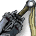 |
万仞剑 | 80 | 古时名剑，剑鸣之声百里可闻。 |
| 玄铁剑 | 90 | 重剑无锋，大巧不工。 | |
| 单刀 | |||
| 腰刀 | 1 | 普通的腰刀，侠客的最普通装备。 | |
| 单刀 | 10 | 梁山好汉出门常带的兵器，因为容易买到。 | |
| 鬼头刀 | 20 | 刽子手常用，很是锋利。 | |
| 雁翎刀 | 30 | 寒铁精练，秋意森然。 | |
| 月牙刀 | 40 | 刀带分刺，阴险毒辣。 | |
| 破风刀 | 50 | 一出鞘就有破风刀声，锐利无比。 | |
| 滚珠宝刀 | 60 | 传说中的宝刀，利能吹毛断发。 | |
| 冷月刀 | 70 | 又厚又重的大刀，耍起来很有威风。 | |
| 青龙刀 | 80 | 关云长曾用过的名刀，威风凛凛。 | |
| 大风刀 | 90 | 据说锋利到了极点，断物折器只如风过。 | |
| 棍棒 | |||
| 烧火棍 | 1 | 平常用来拨柴捅灰的棍子。 | |
| 齐眉棍 | 10 | 棍长齐眉，故名。 | |
| 盘花棍 | 20 | 棍身雕花，花巧有余沉稳不足。 | |
| 虎尾棍 | 30 | 黄铜打造，金箍细雕。 | |
| 哨棒 | 40 | 经过修饰的木棒，还装了风哨。 | |
| 杆棒 | 50 | 比较粗的白蜡杆棒，韧性很好。 | |
| 狼牙棒 | 60 | 金人喜欢用的兵器，要有力气才能用好。 | |
| 混铁棒 | 70 | 生铁镔铁混炼制成，非常沉重。 | |
| 搅海棍 | 80 | 神秘的血紫铜铸造，力能翻江倒海。 | |
| 金箍棒 | 90 | 精钢打造头戴金箍，就是盗版孙悟空如意棒。 | |
| 枪矛 | |||
| 铁枪 | 1 | 就是普通的木杆上装了个铁枪头。 | |
| 长枪 | 10 | 学习枪法时常用的东西，实战则少有人用。 | |
| 点钢枪 | 20 | 枪头加了钢，伤害力比铁枪强一点。 | |
| 钩镰枪 | 30 | 水浒好汉徐宁最擅，后人多用它对付连环马。 | |
| 环子枪 | 40 | 枪尖串有铁环，挥舞时哗哗作响，甚是威风。 | |
| 豹尾枪 | 50 | 力量与速度的优美结合。 | |
| 雁翎枪 | 60 | 枪体全为寒铁打造，难得的好枪。 | |
| 透骨枪 | 70 | 能轻松穿透骨骼，实在是很毒辣的兵器。 | |
| 火尖枪 | 80 | 传说中的宝枪，似乎有神秘的力量。 | |
| 丈八蛇矛 | 90 | 矛上似乎还有张翼德喝断流水的豪气。 | |
| 锤 | |||
| 蒜头锤 | 1 | 青铜打就，看起来挺沉但就是个练功的玩具。 | |
| 八棱锤 | 10 | 虽沉重但太别劲，不利使用。 | |
| 五星锤 | 20 | 形状奇异，用起来也与众不同。 | |
| 霹雳锤 | 30 | 锤落如霹雳声响，敌人胆破心惊。 | |
| 亮银锤 | 40 | 白银打造，可能材料太贵不是很重。 | |
| 狼牙锤 | 50 | 金国猛将金弹子的惯用兵器，十分厉害。 | |
| 裂心锤 | 60 | 岳飞帐下八大锤中何元庆所用，英风尤在。 | |
| 金瓜锤 | 70 | 岳飞帐下八大锤中严成方所用，壮志不灭。 | |
| 孽龙锤 | 80 | 传说中的神锤，只有神将才用。 | |
| 破天锤 | 90 | 唐初第一猛将李元霸留下的兵器，威力无边。 | |
| 双刀 | |||
| 峨嵋刺 | 1 | 力量很小的女子常用护身兵器。 | |
| 镔铁双刀 | 10 | 镔铁打造，沉重迟钝。 | |
| 月牙刺 | 20 | 护手带月牙钩，攻守兼备。 | |
| 黑白双刀 | 30 | 一把为精钢打造，一把为镔铁铸造。 | |
| 雪花双刀 | 40 | 传说武松曾用这种刀斩奸除恶。 | |
| 鸳鸯刀 | 50 | 一鞘两刀，可合而为一，难分难舍。 | |
| 芙蓉刀 | 60 | 百炼钢化绕指柔，杀气过重，隐有血痕。 | |
| 蝴蝶双刀 | 70 | 轻盈灵巧，使动如蝴蝶纷飞。 | |
| 秋雨刀 | 80 | 秋风秋雨愁杀人，此刀令人心生忧郁而名。 | |
| 吞日斩 | 90 | 暗蕴日月精华，刀出天地无光。 | |
| 缠手 | |||
| 粗布缠手 | 1 | 粗布所制成的缠手，可增加掌法威力。 | |
| 罗汉缠手 | 10 | 最早出自少林，为少林罗汉练功所用。后流传至江湖上为江湖人练习拳掌必备物品。 | |
| 拳宗缠手 | 20 | 练拳之人专用缠手，可增加拳法威力。 | |
| 飞鱼缠手 | 30 | 江海中有飞鱼，速如疾电。取飞鱼皮制成的缠手，能让掌风更胜一筹。 | |
| 穿云缠手 | 40 | 穿云入雾，如天边之蛟龙。 | |
| 含光缠手 | 50 | 动如霹雳，静若含光。 | |
| 玄武缠手 | 60 | 蕴含上古圣兽玄武之力的缠手。 | |
| 朱雀缠手 | 70 | 蕴含上古圣兽朱雀之力的缠手。 | |
| 白虎缠手 | 80 | 蕴含上古圣兽白虎之力的缠手。 | |
| 青龙缠手 | 90 | 蕴含上古圣兽青龙之力的缠手。 | |
-
防具
- 普通防御类装备
- 侠客门派及性别影响其所能装备的防具
| 图片 | 名称 | 等级 | 说明 |
| 丐服类 | |||
| 烂布衣 | 1 | 破破烂烂的布衣，除了乞丐没人会穿。 | |
| 普通丐衣 | 10 | 一般乞丐穿的衣服，与布衣类似，有很多补丁。 | |
| 叫化衣 | 20 | 丐帮最低阶的帮众的常服。 | |
| 土麻丐衣 | 30 | 稍高级丐帮弟子的常服。 | |
| 荨麻丐衣 | 40 | 丐帮六袋长老的常服，由精致荨麻编制而成。 | |
| 火麻丐衣 | 50 | 丐帮七袋长老的常服。 | |
| 十方丐衣 | 60 | 丐帮八袋长老常服。宽而不肥，适于格斗。 | |
| 百结丐衣 | 70 | 九袋长老常服，袋结只有九袋长老与帮主可编制。 | |
| 缠丝千结服 | 80 | 由大量丝麻编制的衣服，紧而又有弹性。 | |
| 万流归宗衣 | 90 | 丐帮帮主及十袋长老服，武功与地位的象征。 | |
| 袈裟类 | |||
| 沙弥服 | 1 | 刚入门的小沙弥穿着的僧衣。 | |
| 僧衣 | 10 | 僧人们日常穿着的便衣。 | |
| 百衲衣 | 20 | 我国汉地僧人的主要常服。 | |
| 安陀会 | 30 | 又名五条衣，严肃的僧人衣着。 | |
| 郁多罗僧 | 40 | 又名七条衣，庄重的僧人上衣。 | |
| 僧伽梨 | 50 | 僧人的礼服，庄严的场合才能穿着。 | |
| 月白袈裟 | 60 | 有一定地位的僧人常服。 | |
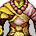 |
明静袈裟 | 70 | 得道高僧的日常着服。 |
| 金缕袈裟 | 80 | 传说中佛祖姑母送给他的礼物。 | |
| 七宝袈裟 | 90 | 唐三藏取经时获佛祖赠送的佛门至宝。 | |
| 道袍类 | |||
| 道士大褂 | 1 | 小道士平时干活练武时穿着的衣服。 | |
| 道士长袍 | 10 | 道士的日常着服。 | |
| 净衣 | 20 | 普通道士做法事穿着的礼服。 | |
| 青松法袍 | 30 | 道行深厚，天师称号者方可穿着的法衣。 | |
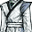 |
天师道袍 | 40 | 道行深厚，天师称号者方可穿着的法衣。 |
| 玄武法衣 | 50 | 集玄武之灵气，玄门之宝。 | |
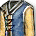 |
七宝霞衣 | 60 | 外表平庸无奇，暗含七彩霞光的宝衣。 |
| 三清袍 | 70 | 返朴归真，暗合大道的道袍。 | |
| 千年鹤氅 | 80 | 用鹤羽点缀的斗篷，三国后成为智慧的象征。 | |
| 真武圣衣 | 90 | 蕴有真武大帝神力的道服。 | |
| 刺客类 | |||
| 紧身服 | 1 | 顾名思义，紧身的武服，适合战斗。 | |
| 刺客装 | 10 | 类似于紧身服，衣内设有装备暗器的空间。 | |
| 夜行衣 | 20 | 黑色紧身服，并且相对宽松，适合夜间活动。 | |
| 梦迷衣 | 30 | 以特殊染料制成的夜行衣，不容易被人发现。 | |
| 无色衣 | 40 | 能让穿着者溶入环境，适合杀手。 | |
| 渔忍装 | 50 | 高级的刺客服装，柔韧性极好。 | |
| 连云衣 | 60 | 材质奇特，灵活性与防御力俱佳。 | |
| 天梦衣 | 70 | 穿着者身形犹如大梦迷离，不可捉摸。 | |
| 无庸劲装 | 80 | 所有刺客梦寐以求的刺客服，能暗藏大量暗器。 | |
| 千忍秘装 | 90 | 郁积无边杀气，见神杀神，遇佛灭佛。 | |
| 侠客类 | |||
| 粗布长袍 | 1 | 由粗麻布制成的长袍。 | |
| 轻葛衫 | 10 | 细葛织成，轻柔耐穿。 | |
| 缎袍 | 20 | 锦缎织就，华美轻薄。 | |
| 逸侠装 | 30 | 适合剑客的衣服，飘逸潇洒。 | |
| 任侠服 | 40 | 五陵侠少的流行服饰。 | |
| 流彩服 | 50 | 流光溢彩，华贵大方。 | |
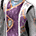 |
银丝袍 | 60 | 蚕丝中加入银丝织造，有不错的防御力。 |
| 紫金袍 | 70 | 蚕丝中加入金丝织造，名贵而又能护体 | |
| 寒霜袍 | 80 | 冰蚕丝与白金丝混织而成。 | |
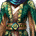 |
绛纱袍 | 90 | 帝王御用，妙处难言。 |
| 铠甲类 | |||
| 锁子甲 | 1 | 军中下级军士装备，防御力一般。 | |
| 两裆铠 | 10 | 由前后两片组成，晋唐时多见。 | |
| 明光铠 | 20 | 唐朝以前军中武将的常用铠甲。 | |
| 细鳞甲 | 30 | 由很多钢鳞片编成，不妨碍活动。 | |
| 鸟锤甲 | 40 | 甲片如鸟身，似纺锤，故而得名。 | |
| 山文字甲 | 50 | 甲片倒丫，中间凸两边凹，利于防箭。 | |
| 獬豸甲 | 60 | 比怪兽獬豸的皮更加坚固。 | |
| 狻猊甲 | 70 | 名将最爱，穿上雄风赛猛狮。 | |
| 锁子黄金甲 | 80 | 一代名甲，刀矢不近。 | |
| 唐猊甲 | 90 | 传说中吕温侯的护身宝甲。 | |
| 女道袍类 | |||
| 女式道衣 | 1 | 女修道士的普通衣着。 | |
| 修真道衣 | 10 | 做工比较考究的女性道服。 | |
| 火烷道衣 | 20 | 火烷布质的高级道衣。 | |
| 碧霞道衣 | 30 | 色泽青翠，虽为道装也不失生动。 | |
| 八卦道衣 | 40 | 有道之士的日常服装。 | |
| 寒梅道衣 | 50 | 女性修真的绝佳衣着。 | |
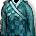 |
无极道衣 | 60 | 大成无用，大道无极。 |
| 地缘道衣 | 70 | 钟坤阴灵气的宝衣。 | |
| 冰蚕道衣 | 80 | 冰蚕丝织，穿上仙风道骨。 | |
| 龙绡道衣 | 90 | 龙绡纱织成的道衣，奇珍异宝。 | |
| 裙类 | |||
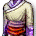 |
百迭裙 | 1 | 妇女最平常的衣物。 |
| 青罗裙 | 10 | 纯纱织成的衣裙。 | |
| 织锦石榴裙 | 20 | 绣花锦裙，价值不菲。 | |
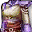 |
双蝶绣罗裙 | 30 | 锦绣重裙，富贵奢华。 |
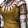 |
百鸟裙 | 40 | 百鸟翎毛为饰，十分难得。 |
| 月华裙 | 50 | 月下可映出光晕的神奇长裙。 | |
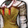 |
凤尾裙 | 60 | 孔雀羽织成，眩人眼目故能保护自己。 |
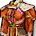 |
百凤朝阳裙 | 70 | 阳光下奇彩流霞，仿如百凤朝阳。 |
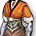 |
琼玉裙 | 80 | 缀有千颗碎玉的珍贵女装。 |
| 留仙裙 | 90 | 传说是汉朝赵飞燕亲手所制，穿上飘飘欲仙。 | |
| 通用女装类 | |||
| 蜀锦衣 | 1 | 采用四川绸缎制作的上装。 | |
| 绫丝衣 | 10 | 精丝细织的上等女装。 | |
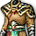 |
锦仲衣 | 20 | 名贵锦缎制作的高贵女装。 |
| 灵蛇装 | 30 | 如蛇般贴身，灵活而有魅力。 | |
| 玄狸裘 | 40 | 黑色水狸皮制的女装。 | |
| 黑貂裘 | 50 | 黑貂皮制作的皮衣。 | |
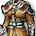 |
虎皮裘 | 60 | 虎皮质地，极其难得。 |
| 七尾白狐裘 | 70 | 成精的七尾白狐皮制，可得其媚惑能力。 | |
| 韵霓裳 | 80 | 一步七摇，虹霓光彩动人心魄。 | |
| 迷魂裳 | 90 | 勾魂荡魄，具有妖异的魅力。 | |
首饰
- 属性防御类装备
- 首饰为所有侠客通用装备
| 图片 | 价格 | 等级 | 说明 |
| 戒指 | |||
| 黄玉戒指 | 1 | 简陋的黄田石戒指，没什么价值。 | |
| 橄榄石戒指 | 10 | 常见的橄榄石戒指，不值几个钱。 | |
| 芙蓉石戒指 | 20 | 用小粒的玛瑙镶嵌，不算名贵。 | |
| 翡翠戒指 | 30 | 比较难得的碧玺戒指，有些价值。 | |
| 翠榴石戒指 | 40 | 稀有的的翠榴石戒指，有身份的人才戴。 | |
| 祖母绿戒指 | 50 | 缅甸国进贡的祖母绿镶嵌，十分名贵。 | |
| 海蓝宝石戒指 | 60 | 海外商人运来的海蓝宝石镶嵌，珍稀物品。 | |
| 红宝石戒指 | 70 | 锡兰王国出产的红宝石镶成，从大内流出。 | |
| 蓝宝石戒指 | 80 | 天竺国高僧加持过的蓝宝石戒指，珍贵无比。 | |
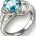 |
钻石戒指 | 90 | 海外传来的钻石戒指，据说包容了神秘的力量。 |
| 香囊 | |||
| 熏衣香囊 | 1 | 穗熏衣草花瓣中提炼香料制成，民间常用。 | |
| 茉莉香囊 | 10 | 从茉莉花瓣中提取的香料制成，也很普通。 | |
| 乳香香囊 | 20 | 乳香树木质中香料配制，富家常用。 | |
| 兰花香囊 | 30 | 从兰花花瓣中提取的高级香料，富室才用。 | |
| 合欢香囊 | 40 | 合欢花瓣中提取的高级香料，大户人家用品。 | |
| 紫苏香囊 | 50 | 从紫苏花叶子中提取的高级香料，官家喜用。 | |
| 沉檀香囊 | 60 | 特殊檀树中提取的名贵香料，王室用品。 | |
| 灵麝香囊 | 70 | 取于香獐香腺的名贵香料，皇家才用得起。 | |
| 迦楠香囊 | 80 | 香木蚁穴中香蜜遗渍提取的名贵香料，珍奇。 | |
| 龙涎香囊 | 90 | 龙涎，最为难得的香料，世间奇珍。 | |
| 玉佩 | |||
| 绿蚰玉佩 | 1 | 说是玉佩其实也就是好看点的石头。 | |
| 京白玉佩 | 10 | 普通的京白玉玉佩，穷书生充门面用的。 | |
| 桃花玉佩 | 20 | 色沁桃花，适合蓬户儿女定情之用。 | |
| 梅花玉佩 | 30 | 玉中隐有梅花纹，不是俗物。 | |
| 五色玉佩 | 40 | 虽说玉以纯色为上，但这五色玉佩也是难得之物。 | |
| 青玉玉佩 | 50 | 少见的青玉琢成，文人骚客的常备之物。 | |
| 碧玉玉佩 | 60 | 晶莹的碧玉玉佩，王孙公子莫不喜爱。 | |
| 墨玉玉佩 | 70 | 纯净的墨玉制成，质朴无华但灵性不泯。 | |
| 黄玉玉佩 | 80 | 珍贵的黄玉制成，温润无瑕，暗蕴灵气。 | |
| 羊脂白玉 | 90 | 和田羊脂白玉制成，玉中奇珍，帝皇饰物。 | |
| 项链 | |||
| 铜项链 | 1 | 铜质项链，骗小孩的东西。 | |
| 银项链 | 10 | 银质项链，对穷人也是贵重物品了。 | |
| 金项链 | 20 | 金质项链，富家子弟经常佩戴。 | |
| 白金项链 | 30 | 白金制作，市面上比较难得的东西。 | |
| 玉珠项链 | 40 | 由玉石磨制的珠子穿成，价值不菲。 | |
| 绿松石项链 | 50 | 珍贵的绿松石串成，清心定神。 | |
| 水晶项链 | 60 | 名贵之物，千金难买。 | |
| 孔雀石项链 | 70 | 孔雀石连成，暗蕴奇光，十分珍贵。 | |
| 珍珠项链 | 80 | 许多同样的大珍珠穿成，价值连城。 | |
| 钻石项链 | 90 | 缀有钻石的金项链，也是海外传来的奇物。 | |
消耗品
- 一次性消耗品，使用道具获得效果后，物品消失。
| 图片 | 名称 | 效果 |
| 宝箱 | 江湖忽现的神秘宝箱，据传里面藏有神秘宝物。 | |
| 侠客手札 | 记录功法心得的道具，侠客使用后获得经验值。 | |
| 洗髓经 | 侠客使用后随机更换为对应门派的1级基础技能。 | |
| 真元丹 | 侠客服用后获得技能真元值。 | |
| 技能升级丹 | 可提升技能等级的珍贵丹药。 |
-
材料
- 合成高级装备的材料，通过分解物品获得。
| 图片 | 名称 | 效果 |
| 绿水晶 | 拆解绿色装备获得的水晶，蕴含神秘的力量，可作为合成材料。 | |
| 青水晶 | 拆解青色装备获得的水晶，蕴含神秘的力量，可作为合成材料。 | |
| 蓝水晶 | 拆解蓝色装备获得的水晶，蕴含神秘的力量，可作为合成材料。 | |
| 黑石 | 拆解新手礼包中的装备后得到的石头，蕴含非常神秘的力量，可作为合成材料。 |